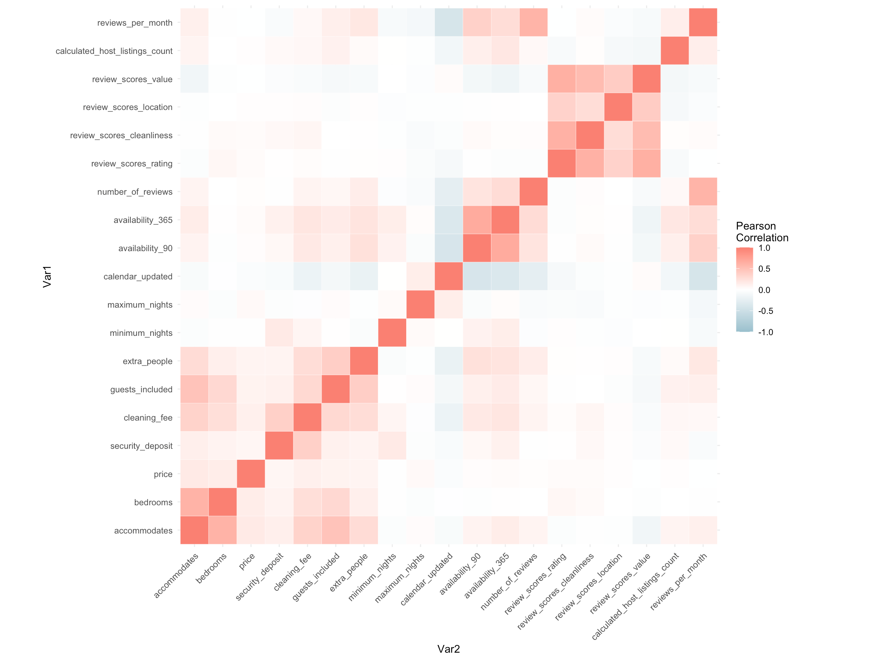
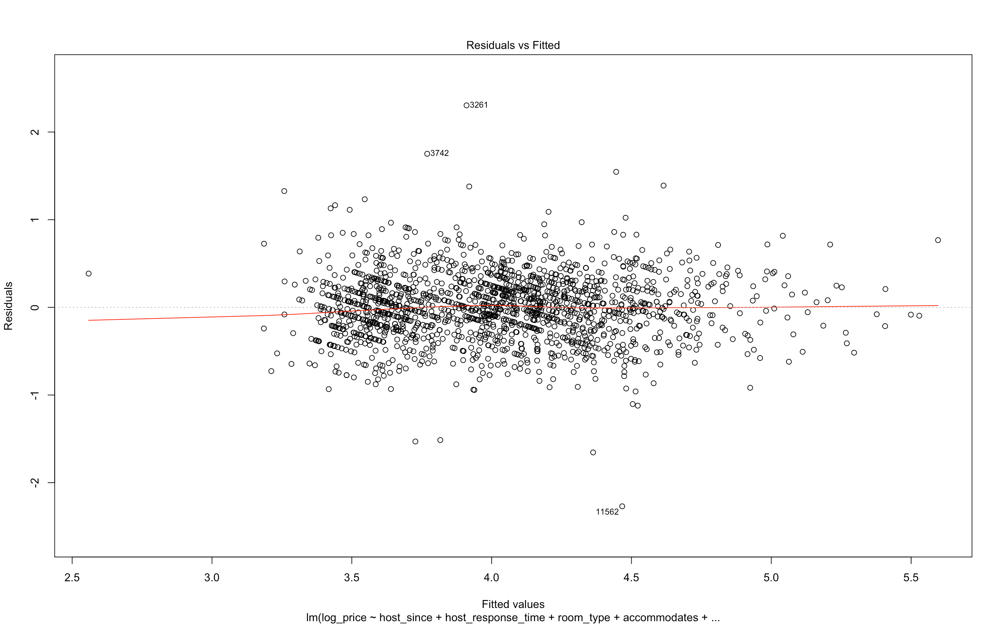
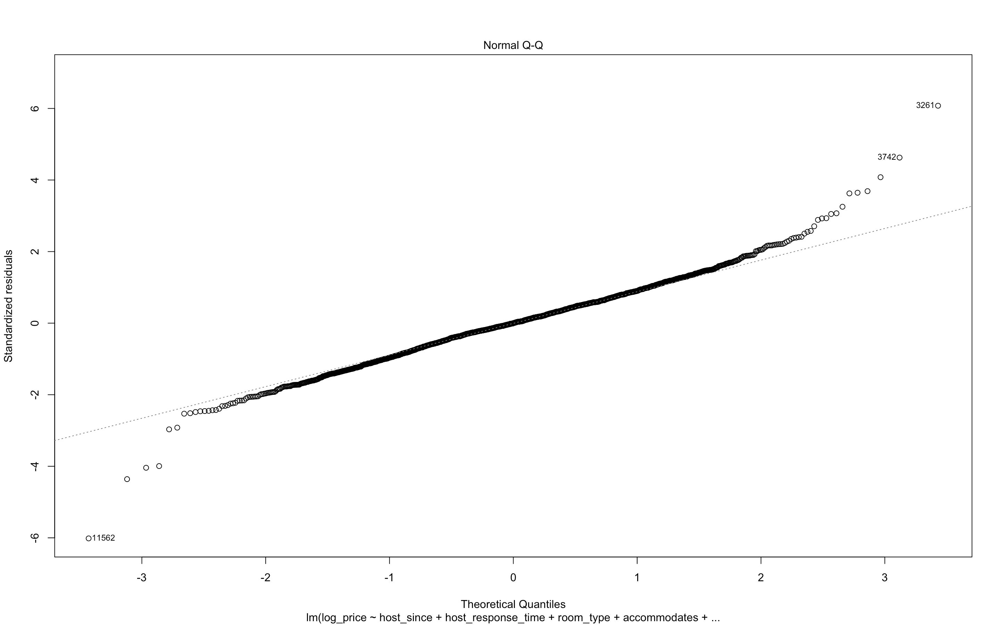
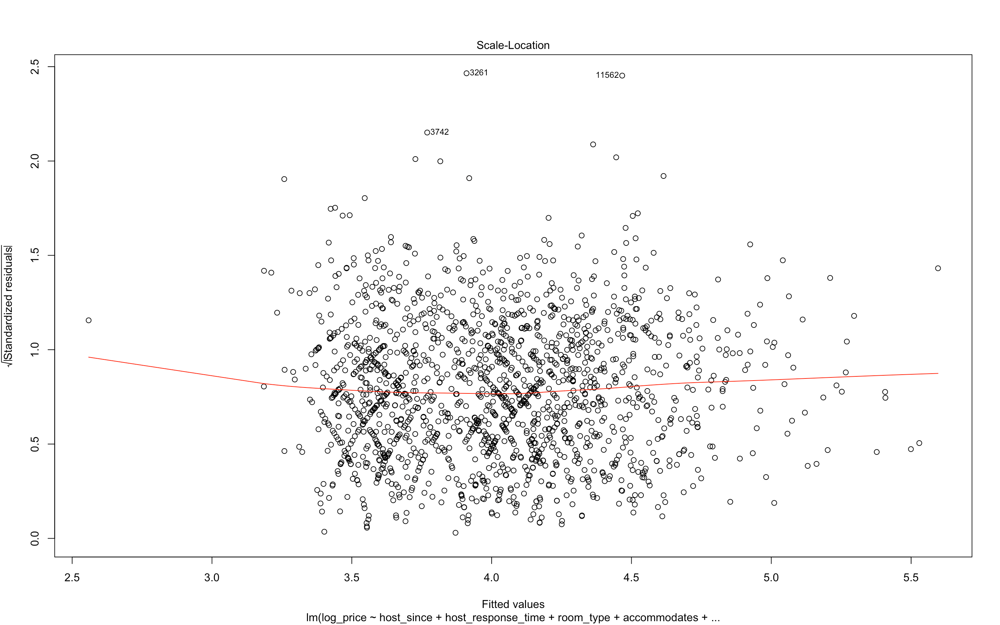
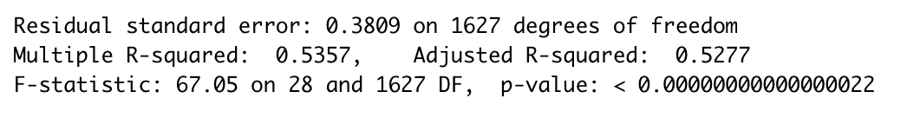

A look into the AirBnB public dataset for price prediction and understanding of the predictive variables
In Data Cleaning Challenge part, I shared my understanding of data cleaning. Now, let’s dive deeper.
Think about an interesting question, “if you are a host, how to maximize your profits?” This time I used a linear regression model to explore deeper into the possible factors that contribute to Airbnb rental prices. It’s okay for you to try other models like GBDT or XGBoost. In this post, I will highlight the approach I used to answer this question as well as how I explain the results of regression analysis.
Same as last post, data is sourced from the Inside Airbnb website. And data have been prepared in Data Cleaning Challenge part. On that part, I handled with some missing values and also create some features.
Step 1: Think about the problem and dataset
Before diving head first into the data and producing large correlation matrices, I always try to think of the question and get a sense of the features. Why am I doing this analysis? What’s the goal? What relationships between features and the target variable make sense? Hope this tip can help you.
In my preview post, missing values have been handled, and also I removed some featrues like url or host_name. As shown in the below table, almost of data is in a very neat and ordered format. Date-typed date has been transformed as number of days or only extract the year. Some of null value has become new level of its variable, and some has been binned into cagegories. I will not go through the cleaning work in detail. Hope the preview blog would be helpful for you.
| host_since | host_location | host_response_time | host_response_rate | host_is_superhost | host_neighbourhood | host_listings_count | host_total_listings_count | host_has_profile_pic | host_identity_verified | street | neighbourhood | neighbourhood_cleansed | neighbourhood_group_cleansed | city | state | zipcode | market | smart_location | country_code | country | is_location_exact | property_type | room_type | accommodates | bathrooms | bedrooms | beds | bed_type | square_feet | price | weekly_price | monthly_price | security_deposit | cleaning_fee | guests_included | extra_people | minimum_nights | maximum_nights | calendar_updated | has_availability | availability_30 | availability_60 | availability_90 | availability_365 | calendar_last_scraped | number_of_reviews | first_review | last_review | review_scores_rating | review_scores_accuracy | review_scores_cleanliness | review_scores_checkin | review_scores_communication | review_scores_location | review_scores_value | requires_license | license | instant_bookable | is_business_travel_ready | cancellation_policy | require_guest_profile_picture | require_guest_phone_verification | calculated_host_listings_count | reviews_per_month | |
|---|---|---|---|---|---|---|---|---|---|---|---|---|---|---|---|---|---|---|---|---|---|---|---|---|---|---|---|---|---|---|---|---|---|---|---|---|---|---|---|---|---|---|---|---|---|---|---|---|---|---|---|---|---|---|---|---|---|---|---|---|---|---|---|---|---|
| 3 | 2008 | Coledale, New South Wales, Australia | within a day | high | f | Prenzlauer Berg | 1 | 1 | t | t | Berlin, Germany | Prenzlauer Berg | Prenzlauer Berg Südwest | Pankow | Berlin | Berlin | 10405 | Berlin | Berlin, Germany | DE | Germany | t | Apartment | Entire home/apt | 4 | 1 | 1 | 2 | Real Bed | 720 | 90 | offer discount | offer discount | 200 | 50 | 2 | 20 | 62 | 1125 | 7 | t | 0 | 0 | 0 | 220 | 2018/11/7 | 143 | 2009 | 2017 | 92 | 9 | 9 | 9 | 9 | 10 | 9 | t | No | t | f | strict_14_with_grace_period | f | f | 1 | 1.25 |
| 5 | 2009 | Berlin, Berlin, Germany | within an hour | high | t | Prenzlauer Berg | 1 | 1 | t | t | Berlin, Germany | Prenzlauer Berg | Helmholtzplatz | Pankow | Berlin | Berlin | 10437 | Berlin | Berlin, Germany | DE | Germany | t | Apartment | Private room | 2 | 1 | 1 | 2 | Real Bed | N/A | 42 | no discount | no discount | 0 | 0 | 1 | 24 | 2 | 10 | 3 | t | 15 | 26 | 26 | 26 | 2018/11/7 | 197 | 2009 | 2018 | 96 | 10 | 10 | 10 | 10 | 10 | 9 | t | No | f | f | moderate | f | f | 1 | 1.75 |
| 6 | 2009 | Berlin, Berlin, Germany | within a few hours | high | f | Prenzlauer Berg | 1 | 1 | t | t | Berlin, Germany | Prenzlauer Berg | Prenzlauer Berg Südwest | Pankow | Berlin | Berlin | 10405 | Berlin | Berlin, Germany | DE | Germany | f | Apartment | Entire home/apt | 7 | 2.5 | 4 | 7 | Real Bed | N/A | 180 | offer discount | no discount | 400 | 80 | 5 | 10 | 6 | 14 | 14 | t | 0 | 7 | 7 | 137 | 2018/11/7 | 6 | 2015 | 2018 | 100 | 10 | 10 | 10 | 10 | 10 | 10 | t | Yes | f | f | strict_14_with_grace_period | f | f | 1 | 0.15 |
| 7 | 2009 | Berlin, Berlin, Germany | within a day | high | f | Prenzlauer Berg | 3 | 3 | t | f | Berlin, Germany | Prenzlauer Berg | Prenzlauer Berg Nordwest | Pankow | Berlin | Berlin | 10437 | Berlin | Berlin, Germany | DE | Germany | t | Apartment | Entire home/apt | 2 | 1 | 0 | 1 | Real Bed | N/A | 70 | offer discount | offer discount | 500 | 0 | 1 | 0 | 90 | 1125 | 1 | t | 0 | 0 | 0 | 129 | 2018/11/7 | 23 | 2010 | 2018 | 93 | 10 | 10 | 9 | 10 | 9 | 9 | t | No | f | f | strict_14_with_grace_period | f | f | 3 | 0.23 |
| 10 | 2010 | Berlin, Berlin, Germany | within an hour | high | t | Prenzlauer Berg | 1 | 1 | t | t | Berlin, Germany | Prenzlauer Berg | Prenzlauer Berg Südwest | Pankow | Berlin | Berlin | 10405 | Berlin | Berlin, Germany | DE | Germany | t | Other | Private room | 2 | 1 | 1 | 1 | Real Bed | N/A | 45 | offer discount | offer discount | 0 | 18 | 1 | 26 | 3 | 30 | 7 | t | 8 | 18 | 42 | 42 | 2018/11/7 | 279 | 2010 | 2018 | 96 | 10 | 10 | 10 | 10 | 10 | 10 | t | No | f | f | strict_14_with_grace_period | f | f | 1 | 2.83 |
Step 2: Feature Selection
As mentioned in last blog, features has been engineered, including transform the format and create more effecient and useful features. Now is the step of feature selection. Not all the variables will be used in the linear regression model. There are three reasons. One is that some data is unique for each datapoint like id, host_id. These features are very easy to identify, and I have been removed in data cleaning. The second thing is another extreme situation, where all the value for every datapoint is same or constant. These features are named as “Zero Variance Feature”, which are useless and redundant. I will detect them by primary value analysis. When one feature’s primary value ratio is over a critical level, the feature has less predictable ability. The third one is that there are strong correlations between variables. I use correlation coefficient and VIF to detect
1. Primary Value Ratio
Delect the feature whose primary value ratio over 80%
1 | RowNumber = nrow(PB_lm) |
2. Correlation Analysis
Correlation analysis is a statistical method used to evaluate the strength of relationship between two quantitative variables. A high correlation means that two or more variables have a strong relationship with each other, while a weak correlation means that the variables are hardly related. In linear regression model, one model assumption is that variables should be independent of one another. Otherwises, one variable will be explained by other.

3. Skewness of Dependent Variable
Before we detect multicollinearity problem, I transformed price into normal distribution. Price follows right-skewed Distribution. It is a common phenomenon for most real-life variables. However, for linear regression model, it is essential for residual of the model to follow normal distribution. And then the response variable will also follow. Here I used log transformation to make response variable into normal distribution. The new repsonce variable should be log(price). For log transforming, the data point which price is 0 should be deleted.
Step 3: Run OLS and check for linear regression assumptions
The OLS model is the most common estimation method for linear models, and will provide us with the simplest linear regression model to base our future models off of. It’s always good to start simple then add complexity. In addition, regression model is a powerful analysis that can analyze multiple variables simultaneously to answer complex research questions. However, if you don’t satisfy the OLS assumptions, you might not be able to trust the results. OLS model is a great place to check for linear regression assumptions.
1. Get Variance Inflation Factors (VIFs) to Detect Multicollinearity
1 | # Build the initial model |
VIFs are not produced by the OLS table so you should manually extract them. They are a great way to check for multicollinearity in your model. Multicollinearity is when there is high correlation between your features. It is an assumption of linear regression that your data does not have multicollinearity, so make sure to check this. You want your VIFs under 7.
Here, VIFs values of neighbourhood_cleansed, zipcode, first_review are large, which indicates that there is significant Multicollinearity problem with 3 features. Therefore, we delete them and rebuild a new model.
2. Check Residuals of Model
Also, another important asssumption is about residuals.
1 | # Build the second model without 3 multicollinearity features |
Resuduals vs. Fitted
Even though residuals of some outliers over the range of [-2,2], most of data points randomly distributes around 0. This model fits the data well

Normal Q_Q Plot
Some data points deviate from the diagonal, so residuals do not follow normal distribution strictly.

Scale-Location
Seem to be constant with no trend. There is no serious problem in Heteroskedasticity.

Residual Independence
1 | durbinWatsonTest(lendfitback_2) |
In Durbin Watson Test, the p-value is larger than 0.05, we can assume errors are independent. In conclusion, the residuals can be regarded as stochastic error.
Step 4: Prediction in valid dataset and Summary
After we check the residuals, we know the model is satisfied OLS assumptions. And we use the model to predict on validation dataset.

The adjusted r-squared is only 0.5277. This means only 52.77% variation has been explained by the multiple regression model. In general, the higher the R-squared, the better the model fits your data. Even though the R-squared is not closing to 1, we also can infer the sample data are well correspond to the fitted (assumed) model. In fact, R-squared doesn’t tell us the entire story. After we check the residual plots, we know the residuals independent and identically distributed in normal distribution. That is, this model fits the data well.
In valid dataset, RMSE is 0.4206808. The standard deviation of the predictions from the actual values in valid dataset would be 0.4206808. What’s more, RMSE in training dataset is 0.3775776. The difference between these two number is small. This tells us the model is good-fit and has generalization ability. The model has the ability to adapt properly to new, previously unseen data, drawn from the same distribution as the one used to create the model.
Thanks for reading!
Please let me know if there is something I should add. And if you enjoy it, share it with your friends and colleagues : )